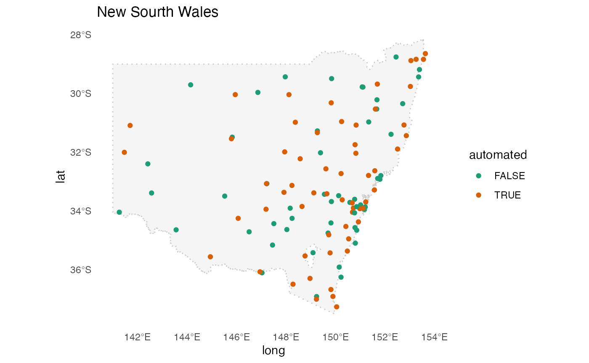

3. Application: Comparing records in automated and traditional weather stations
3-application-automated-stations.RmdAn interesting thing about the Australian GHCND weather station data is that some station names are suffixed with “aws”, standing for Automated Weather Stations. This draws our interest to investigate how these automated stations differ from the traditional ones. Most of these automated stations are located in New South Wales, so we will look at pairs there.
nsw_map <- ozmaps::abs_ste %>% filter(NAME == "New South Wales")
nsw <- aus_climate %>%
filter(s2::s2_lnglat(long, lat) %>% s2::s2_within(nsw_map)) %>%
mutate(automated = str_detect(name, "aws"))
plot_map(nsw_map) +
geom_point(data = nsw,
aes(x = long, y = lat, color = automated)) +
scale_color_brewer(palette = "Dark2") +
ggtitle("New Sourth Wales") +
theme_minimal() +
theme(panel.grid.major = element_blank(),
panel.grid.minor = element_blank()) +
coord_sf(xlim = c(141, 154))
The color in the map shows whether a station is an automated one or not and we can observe that some automated weather stations are actually close to the traditional ones. This provides a basis to investigate whether numbers recorded by nearby automated and traditional stations match with each other.
The chunk below finds the closest traditional station, if any, that is within 10 kilometer of an automated one.
auto <- nsw %>% filter(automated)
non_auto <- nsw %>% filter(!automated)
matched <- match_key(non_auto, auto) Here are some post-processing to join the aws stations with non-aws.
matched_non <- non_auto %>%
inner_join(matched %>% select(key_mj, .group), by = c("id" = "key_mj"))
matched_auto <- auto %>%
inner_join(matched %>% select(key_mn, .group), by = c("id" = "key_mn"))
(matched_both <- matched_auto %>% bind_rows(matched_non))
#> # Cubble: id-wise: nested form
#> # Key: id [8]
#> id lat long elev name wmo_id ts automated .group
#> <chr> <dbl> <dbl> <dbl> <chr> <dbl> <list> <lgl> <int>
#> 1 ASN00056238 -30.5 152. 1079 armidale air… 95773 <tibble … TRUE 1
#> 2 ASN00066194 -33.9 151. 3 canterbury r… 94766 <tibble … TRUE 3
#> 3 ASN00067113 -33.7 151. 24.7 penrith lake… 94763 <tibble … TRUE 2
#> 4 ASN00072160 -36.1 147. 164. albury airpo… 95896 <tibble … TRUE 4
#> 5 ASN00056037 -30.5 152. 987 armidale (tr… 94773 <tibble … FALSE 1
#> 6 ASN00063077 -33.7 151. 320 springwood b… 95744 <tibble … FALSE 2
#> 7 ASN00066037 -33.9 151. 6 sydney airpo… 94767 <tibble … FALSE 3
#> 8 ASN00072023 -36.1 147. 184 hume reservo… 94901 <tibble … FALSE 4Now there are various things we can do with this data, i.e. lets look at those pairs in the map:

Plotting the maximum temperature of each pair shows that in general, recordings from nearby stations match pretty well, except some missing values, i.e. in Pair 6, 11, and 13. Noticeably, there is a constant gap between the automated and traditional recording in Pair 9 and 13 and this would indicate further calibration of the themometer.